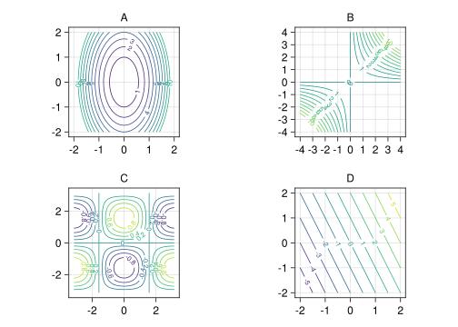
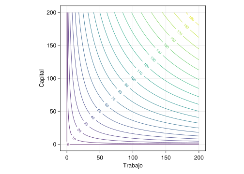
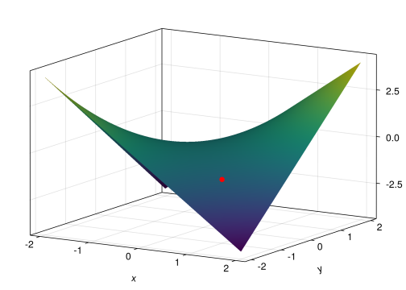

10 Derivadas de funciones de varias variables
Ejercicio 10.1 Emparejar las siguientes funciones de dos variables con sus curvas de nivel.
\(f(x,y) = \cos(x)\operatorname{sen}(y)\)
\(g(x,y) = xy\)
\(h(x,y) = 2x+y\)
\(i(x,y) = 3x^2 + y^2\)
Solución
La gráfica A corresponde a \(i(x,y)\).
La gráfica B corresponde a \(g(x,y)\).
La gráfica C corresponde a \(f(x,y)\).
La gráfica D corresponde a \(h(x,y)\).
Ejercicio 10.2 La ecuación de los gases perfectos relaciona la presión, el volumen y la temperatura de un gas perfecto. Esta ecuación se suele escribir de la forma
\[ PV = nRT \]
donde \(P\) es la presión, \(V\) es el volumne, \(T\) la temperatura, \(R\) es la constante universal de los gases perfectos y \(n\) es el número de moles del gas, que también es constante para cada gas.
¿Cómo varía la presión de un gas perfecto cuando se aumenta la temperatura, manteniendo constante el volumen?
¿Cómo varía la presión de un gas perfecto cuando se aumenta el volumen, manteniendo constante la temperatura?
Solución
Podemos expresar la presión en función del volumen y la temperatura del gas perfecto mediante la función \(P(V,T) = \dfrac{nRT}{V}\).
La variación de la presión con respecto a la temperatura, manteniendo constante el volumen es la derivada parcial de la presión con respecto a la temperatura, que vale
\[ \frac{\partial P}{\partial T} = \frac{nR}{V}. \]
Como el volumen siempre es positivo, esto quiere decir que al aumentar la temperatura, manteniendo constante el volumen, la presión aumenta.
La variación de la presión con respecto al volumen, manteniendo constante la temperatura es la derivada parcial de la presión con respecto al volumen, que vale
\[ \frac{\partial P}{\partial V} = \frac{-nRT}{V^2}. \]
Como el volumen y la temperatura son siempre positivos, esto quiere decir que al aumentar el volumen, manteniendo constante la temperatura, la presión disminuye.
Ejercicio 10.3 La asimilación de CO\(_2\) de una planta depende de la temperatura ambiente (t) y de la intensidad de la luz (l), según la función
\[ f(t,l) = ctl^2, \]
donde \(c\) es una constante.
Estudiar cómo evoluciona la asimilación de CO\(_2\) para distintas intensidades de luz, cuando se mantiene la temperatura constante. Estudiar también cómo evoluciona para distintas temperaturas cuando se mantiene la intensidad de la luz constante.
Solución
La variación de la asimilación de CO\(_2\) con respecto a la intensidad de la luz viene dada por la derivada parcial con respeto a \(l\), que vale
\[ \frac{\partial f}{\partial l}(t,l) = 2ctl, \]
y la variación de la asimilación de CO\(_2\) con respecto a la temperatura viene dada por la derivada parcial con respecto a \(t\), que vale
\[ \frac{\partial f}{\partial t}(t,l) = cl^2. \]
Ejercicio 10.4 La función de producción de Cobb-Douglas
\[p(t,k) = at^\alpha k^{1-\alpha }\]
se utiliza en Econometría para modelizar, de manera simplificada, la producción económica de un país, es decir, el valor monetario de los bienes que se producen en un año, en función de la cantidad de trabajo \(t\) y el capital invertido \(k\), y donde \(a\) es una constante conocida como factor total de productividad y \(\alpha\) es otra constante que mide la elasticidad del producto del trabajo y el capital.
Tomando \(a=1\) y \(\alpha=0.5\), ¿cómo son las curvas de nivel de esta función de producción?
¿Cómo varía la producción cuando aumenta la cantidad de trabajo y se mantiene constante el capital?
¿Cómo varía la producción cuando disminuye el capital?
Solución
Para \(a=1\) y \(\alpha=0.5\) se tiene la función \(p(t,k)=1 \cdot t^{0.5}k^{0.5} = \sqrt{tk}\). Los puntos de la curva de nivel \(c\) cumplirán que \(\sqrt{tk} = c\), de donde se deduce que \(t=\frac{c^2}{k}\) y, por tanto, se trata de una función inversa. En la siguiente gráfica aparecen algunas curvas de nivel de esta función de producción.

La variación de la producción con respecto a al trabajo, manteniendo constante el capital, lo da la derivada parcial con respecto al trabajo, que vale
\[ \frac{\partial p}{\partial t} = a\alpha t^{\alpha-1}k^{1-\alpha}. \]
En el caso particular de \(a=1\) y \(\alpha=0.5\) se tiene
\[ \frac{\partial p}{\partial t} = \frac{1}{2}t^{-1/2}k^{1/2} = \frac{1}{2}\sqrt{\frac{k}{t}}. \]
Esto quiere decir que al aumentar el trabajo la producción económica aumenta a razón de esta cantidad. Se observa que la cantidad de trabajo aparece en el denominador, por lo que cuando la cantidad del trabajo es grande, el incremento de producción es pequeño.
La variación de la producción con respecto a al capital, manteniendo constante el trabajo, lo da la derivada parcial con respecto al capital, que vale
\[ \frac{\partial p}{\partial k} = at^{\alpha}(1-\alpha)k^{1-\alpha-1} = a(1-\alpha)t^{\alpha}k^{-\alpha}. \]
En el caso particular de \(a=1\) y \(\alpha=0.5\) se tiene
\[ \frac{\partial p}{\partial t} = \frac{1}{2}t^{1/2}k^{-1/2} = \frac{1}{2}\sqrt{\frac{t}{k}}. \]
Esto quiere decir que al aumentar el capital la producción económica aumenta a razón de esta cantidad. Al igual que antes, se observa que el capital aparece en el denominador, por lo que cuando el capital es grande, el incremento de producción es pequeño.
Ejercicio 10.5 Se tiene un cilindro de radio \(5\) cm y altura \(3\) cm. ¿Es el volumen del cilindro más sensible a una pequeña variación de su radio o de su altura? ¿Cuál debería ser la altura del cilindro para que su volumen fuese igual se sensible a una pequeña variación de su radio que a una pequeña variación de su altura?
Solución
El volumen de un cilindro depende de su radio y de su altura según la función \(v(r,h)=\pi r^2h\).
La tasa de variación del volumen con respecto al radio es la derivada parcial del volumen con respecto al radio, es decir,
\[ \frac{\partial v}{\partial r} = 2\pi rh, \]
que para un cilindro de radio \(5\) cm y altura \(3\) cm es \(\frac{\partial v}{\partial r} = 2\pi 5\cdot 3 = 30\pi\).
Del mismo modo, la tasa de variación del volumen con respecto a la altura es la derivada parcial del volumen con respecto a la altura, es decir,
\[ \frac{\partial v}{\partial h} = \pi r^2, \]
que para un cilindro de radio \(5\) cm y altura \(3\) cm es \(\frac{\partial v}{\partial h} = \pi 5^2 = 25\pi\).
Así pues, el volumen de este cilindro es más sensible a una pequeña variación del radio que de la altura.
Para que fuese igualmente sensible a la variación del radio y de la altura, ambas derivadas parciales deberían ser iguales, es decir,
\[ \frac{\partial v}{\partial r} = \frac{\partial v}{\partial h} \Leftrightarrow 2\pi r h = \pi r^2 \Leftrightarrow h = r/2. \]
Ejercicio 10.6 Una empresa fabrica helados de tres sabores. El coste total de producción viene dada por la función
\[ c(x,y,z)=\frac{1}{10}\sqrt[3]{xyz} + \frac{x}{20} + \frac{y}{40} + \frac{z}{30} + 100, \]
donde \(x\) es el número de helados de chocolate, \(y\) el número de helados de fresa y \(z\) el número de helados de vainilla. Calcular el coste marginal para cada uno de los tipos de helados.
Solución
El coste marginal es la derivada parcial del coste total con respecto al número de helados producidos de cada tipo. Así, el coste marginal de los helados de chocolate es
\[ \frac{\partial c}{\partial x} = \frac{1}{10}yz(xyz)^{-2/3} + \frac{1}{20}. \]
El coste marginal de los helados de fresa es
\[ \frac{\partial c}{\partial y} = \frac{1}{10}xz(xyz)^{-2/3} + \frac{1}{40}. \]
Y el coste marginal de los helados de vainilla es
\[ \frac{\partial c}{\partial z} = \frac{1}{10}xy(xyz)^{-2/3} + \frac{1}{30}. \]
Ejercicio 10.7 La gráfica de una función \(f(x,y)\) se muestra a continuación.

¿Qué signo tienen las derivadas parciales en el punto \((1,-1)\). ¿Y en el punto (0,0)?
Solución
En el punto \((1,-1)\) derivada parcial con respecto a \(x\) es negativa, y la derivada parcial con respecto a \(y\) es positiva.
En el punto \((0,0)\) ambas derivadas parciales se anulan.
Ejercicio 10.8 Obtener la ecuación del plano tangente y de la recta normal las siguientes superficies en los puntos indicados.
\(xyz=8\) en el punto \((4,-2,-1)\).
\(f(x,y) = y\ln(xy)\) en el punto \((1/2, 2, 0)\).
Solución
- Recta normal \(l:(4+2t,-2-4t,-1-8t)\).
Plano tangente \(\pi: 2x-4y-8z+24=0\).
Ejercicio 10.9 Calcular el gradiente de la función
\[ f(x,y,z)=\log \frac{\sqrt{x}}{yz}+\operatorname{arcsen}(xz). \]
Solución
\[ \nabla f(x,y,z) = \left(\frac{z}{\sqrt{1-x^2z^2}}+\frac{1}{2x} ,\frac{-1}{y} , \frac{x}{\sqrt{1-x^2\,z^2}}-\frac{1}{z} \right) \]
Solución
Debe moverse en la dirección \(-\nabla f(1,1,1)=e^{-6}(2,4,6)\).
Ejercicio 10.11 Supongamos que la cantidad de agua almacenada en un pantano al final del año hidrológico, \(A\) en hectómetros cúbicos, viene dada por la función
\[ A(p,t,c) = \sqrt {\frac{{p^3 }}{{t - 1}} - c^2 e^{cpt}} \]
donde \(p\) es la precipitación en litros/m\(^2\) caída durante el año hidrológico, \(t\) es la temperatura media del año hidrológico en ºC y \(c\) el consumo debido a abastecimiento de poblaciones cercanas y riego, en hectómetros cúbicos.
Calcular el gradiente de la cantidad de agua almacenada.
Suponiendo que hubiese algún año en el que el consumo fuese nulo, ¿qué condición tendría que cumplir la temperatura para que la derivada del agua almacenada con respecto a la temperatura fuese igual a la derivada con respecto a la precipitación?
Solución
Ejercicio 10.12 La variable aleatoria bidimensional \((X,Y)\) con función de densidad
\[ f(x,y) = \frac{1}{\sqrt{2\pi}\, \sigma_x\sigma_y} e^{-\frac{1}{2}\left(\frac{(x-\mu_x)^2}{\sigma_x^2}+\frac{(y-\mu_y)^2}{\sigma_y^2}\right)} \]
se conoce como normal bidimensional con \(X\) e \(Y\) independientes, de parámetros \(\mathbf{\mu}=(\mu_x,\mu_y)\) y \(\mathbf{\sigma}=(\sigma_x,\sigma_y)\).
Calcular el gradiente de \(f\) e interpretarlo. ¿En qué punto se anula el gradiente? ¿Qué conclusiones sacas? ¿Cuál es la tasa de crecimiento de \(f\) cuando \(x\rightarrow \infty\)?
Solución
\[ \nabla f(x,y) = -\frac{1}{\sqrt{2\pi}\, \sigma_x\sigma_y} e^{-\frac{1}{2}\left(\frac{(x-\mu_x)^2}{\sigma_x^2}+\frac{(y-\mu_y)^2}{\sigma_y^2}\right)} \left(\frac{x-\mu_x}{\sigma_x^2}, \frac{y-\mu_y}{\sigma_y^2}\right). \]
El gradiente se anula en \((x=\mu_x, y=\mu_y)\) y \(\lim_{x\rightarrow \infty}f(x,y) = 0\).
Ejercicio 10.13 La ecuación diferencial parcial
\[ \frac{\partial^2 u}{\partial x^2} + \frac{\partial^2 u}{\partial y^2} + \frac{\partial^2 u}{\partial z^2} = 0, \]
se conoce como ecuación de Laplace y se aplica a multitud de fenómenos relacionadas con la conducción de calor, el flujo de fluidos o el potencial eléctrico.
Comprobar que la función \(u(x,y,z)=\dfrac{1}{\sqrt{x^2 + y^2 + z^2}}\) satisface la ecuación de Laplace.
¿Existe algún punto en el que el crecimiento de la función sea nulo?
Si fijamos \(z=1\), calcular \(\frac{\partial^4u}{\partial x^2\partial y^2}\).
Solución
- Para comprobar que \(u(x,y,z)\) satisface la ecuación de Laplace calculamos las tres derivadas parciales segundas que intervienen en la ecuación. Comenzando con las derivadas parciales con respecto a la variable \(x\), obtenemos:
\[ u(x,y,z) = \frac{1}{{\sqrt {x^2 + y^2 + z^2 } }} = \left( {x^2 + y^2 + z^2 } \right)^{ - 1/2} \]
\[ \frac{{\partial u}}{{\partial x}} = - \frac{1}{2}\left( {x^2 + y^2 + z^2 } \right)^{ - 3/2} 2x = - x\left( {x^2 + y^2 + z^2 } \right)^{ - 3/2} \]
\[ \frac{{\partial ^2 u}}{{\partial x^2 }} = \frac{\partial }{{\partial x}}\left( { - x\left( {x^2 + y^2 + z^2 } \right)^{ - 3/2} } \right) = - \left( {x^2 + y^2 + z^2 } \right)^{ - 3/2} + 3x^2 \left( {x^2 + y^2 + z^2 } \right)^{ - 5/2} \]
e igualmente para las variables \(y\) y \(z\), tenemos:
\[ \frac{{\partial u}}{{\partial y}} = - y\left( {x^2 + y^2 + z^2 } \right)^{ - 3/2} \]
\[ \frac{{\partial ^2 u}}{{\partial y^2 }} = - \left( {x^2 + y^2 + z^2 } \right)^{ - 3/2} + 3y^2 \left( {x^2 + y^2 + z^2 } \right)^{ - 5/2} \]
\[ \frac{{\partial u}}{{\partial z}} = - z\left( {x^2 + y^2 + z^2 } \right)^{ - 3/2} \]
\[ \frac{{\partial ^2 u}}{{\partial z^2 }} = - \left( {x^2 + y^2 + z^2 } \right)^{ - 3/2} + 3z^2 \left( {x^2 + y^2 + z^2 } \right)^{ - 5/2} \]
Por lo tanto: \[ \frac{{\partial ^2 u}}{{\partial x^2 }} + \frac{{\partial ^2 u}}{{\partial y^2 }} + \frac{{\partial ^2 u}}{{\partial z^2 }} = - 3\left( {x^2 + y^2 + z^2 } \right)^{ - 3/2} + 3\left( {x^2 + y^2 + z^2 } \right)\left( {x^2 + y^2 + z^2 } \right)^{ - 5/2} = \]
\[ =- 3\left( {x^2 + y^2 + z^2 } \right)^{ - 3/2} + 3\left( {x^2 + y^2 + z^2 } \right)^{ - 3/2} = 0 \]
- Una condición necesaria para que el crecimiento de una función de varias variables en un punto sea nulo es que el gradiente en dicho punto se anule, y el gradiente se anula si se anulan sus tres componentes:
\[ \vec \nabla u = \vec 0 \Leftrightarrow \left( {\frac{{\partial u}}{{\partial x}},\frac{{\partial u}}{{\partial y}},\frac{{\partial u}}{{\partial z}}} \right) = \left( {0,0,0} \right) \]
Por lo tanto, tenemos un sistema no lineal de tres ecuaciones con tres incógnitas:
\[ - x\left( {x^2 + y^2 + z^2 } \right)^{ - 3/2} = 0 \]
\[ - y\left( {x^2 + y^2 + z^2 } \right)^{ - 3/2} = 0 \]
\[ - z\left( {x^2 + y^2 + z^2 } \right)^{ - 3/2} = 0 \]
Y teniendo en cuenta que el término \((x^2+y^2+z^2)\), por tratarse de una suma de cuadrados, únicamente puede ser 0 si \(x=y=z=0\); y a igual conclusión llegamos si suponemos que es distinto de 0, ya que entonces la primera ecuación implica que necesariamente \(x=0\), la segunda implica que \(y=0\), y la tercera implica que \(z=0\). Por lo tanto, concluimos que el único punto en el que el crecimiento puede ser nulo es \((x,y,z)=(0,0,0)\), pero dicho punto no pertenece al dominio de definición de la función (tendríamos un cero como denominador de una fracción), por lo que no hay ningún punto en el que la función presente un crecimiento nulo.
- Suponiendo \(z=1\), la función resultante presenta únicamente dos variables:
\[ u(x,y,1) = \frac{1}{{\sqrt {x^2 + y^2 + 1} }} = \left( {x^2 + y^2 + 1} \right)^{ - 1/2} \]
La derivada propuesta es:
\[ \frac{{\partial ^4 u}}{{\partial x^2 \partial y^2 }} = \frac{\partial }{{\partial x}}\left( {\frac{\partial }{{\partial x}}\left( {\frac{\partial }{{\partial y}}\left( {\frac{{\partial u}}{{\partial y}}} \right)} \right)} \right) \]
en donde, como ya sabemos, se puede cambiar el orden de derivación sin que afecte al resultado final, aunque nunca el número total de derivadas con respecto a cada variable.
Operando como ya hicimos en los cálculos previos de las derivadas segundas, obtenemos:
\[ \frac{{\partial u}}{{\partial y}} = - y\left( {x^2 + y^2 + 1} \right)^{ - 3/2} \]
\[ \frac{\partial }{{\partial y}}\left( {\frac{{\partial u}}{{\partial y}}} \right) = \frac{{\partial ^2 u}}{{\partial y^2 }} = - \left( {x^2 + y^2 + 1} \right)^{ - 3/2} + 3y^2 \left( {x^2 + y^2 + 1} \right)^{ - 5/2} \]
\[ \frac{\partial }{{\partial x}}\left( {\frac{{\partial ^2 u}}{{\partial y^2 }}} \right) = \frac{{\partial ^3 u}}{{\partial x\partial y^2 }} = 3x\left( {x^2 + y^2 + 1} \right)^{ - 5/2} - 15y^2 x\left( {x^2 + y^2 + 1} \right)^{ - 7/2} \]
\[ \frac{\partial }{{\partial x}}\left( {\frac{{\partial ^3 u}}{{\partial x\partial y^2 }}} \right) = \frac{{\partial ^4 u}}{{\partial x^2 \partial y^2 }} = \]
\[ =3\left( {x^2 + y^2 + 1} \right)^{ - 5/2} - 15\left( {x^2 + y^2 } \right)\left( {x^2 + y^2 + 1} \right)^{ - 7/2} + 105x^2 y\left( {x^2 + y^2 + 1} \right)^{ - 9/2} \]
Ejercicio 10.14 Tenemos dos objetos de masas \(m_1\) y \(m_2\) unidas por una cuerda que pasa a través de una polea como la de la siguiente figura.

Si \(m_1\geq m_2\), la aceleración de \(m_1\) viene dada por la ecuación
\[ a=\frac{m_1-m_2}{m_1+m_2}g, \]
siendo \(g\) la aceleración de la gravedad.
Demostrar que se cumple la ecuación
\[ m_1\frac{\partial a}{\partial m_1}+m_2\frac{\partial a}{\partial m_2}=0. \]
Solución
\(\dfrac{\partial a}{\partial m_1} = \dfrac{2gm_2}{(m_1+m_2)^2}\) y \(\dfrac{\partial a}{\partial m_2} = \dfrac{-2gm_1}{(m_1+m_2)^2}\).
Ejercicio 10.15 Utilizar la regla de la cadena para funciones de varias variables para demostrar las reglas de derivación de funciones de una variable real
\[\begin{align*} (u+v)' &= u' + v'\\ (u-v)' &= u' - v'\\ (u\cdot v)' &= u'v + uv'\\ (u/v)' &= \frac{u'v-uv'}{v^2} \end{align*}\]
donde \(u\) y \(v\) son funciones de una variable real.
Solución
En un equilibrio químico, la concentración de una sustancia \(z\) depende de las concentraciones de otras dos sustancias \(x\) e \(y\) según la ecuación \(\frac{z}{\sqrt{xy}}-\ln\left(\frac{x+y}{y}\right) = 0\). Usar el diferencial para predecir la variación que experimentará la concentración de \(z\) si la concentración de \(x\) aumenta \(0.1\) mg/mm\(^3\) y la de \(y\) disminuye \(0.2\) mg/\(mm^3\) en el instante en que las concentraciones de \(x\) e \(y\) son 1 mg/mm\(^3\).
Ejercicio 10.16 Un cilindro metálico de radio 30cm y altura 50cm se dilata de manera que la tasa de variación de su radio es 1 cm/s y la tasa de variación de su altura es 2 cm/s. ¿Cuál es la tasa de variación de su volumen?
Ejercicio 10.17 Dos planetas se mueven en un mismo plano describiendo órbitas dadas por las funciones vectoriales \(f(t) = (2 \cos(t), \operatorname{sen}(2t))\) y \(g(t) = (2\operatorname{sen}(t/2), 3\cos(t))\). ¿Cómo varía la distancia entre los planetas en el instante \(t=\pi/2\)?
Ejercicio 10.18 Para calcular el caudal de una fuente se ha llenado un depósito de base cuadrada \(30\pm 0.2\) cm y altura \(50\pm 0.3\) cm en un tiempo de \(20\pm 0.5\) s. Expresar el caudal de la fuente incluyendo error en la medida.
Ejercicio 10.19 La potencia eléctrica \(P\) en un circuito depende de el voltaje \(E\) y la resistencia \(R\) según la fórmula \(P = E^2/R\). Si los errores cometidos al medir el voltaje y la resistencia son de un 1% y un 2% respectivamente, ¿cuál será el error relativo en el cálculo de la potencia cuando se aplican 100 voltios a una resistencia de 1500 ohmios?
Ejercicio 10.20 Sea \(f(x,y,z)=0\) la ecuación que define una superficie en el espacio real. Demostrar que el vector gradiente de \(f\) en cualquier punto \((a, b, c)\) es normal a la superficie en ese punto.
Ejercicio 10.21 La Quimiotaxis es el movimiento de los organismos dirigido por un gradiente de concentración, es decir, en la dirección en la que la concentración aumenta con más rapidez. El moho del cieno Dictyoselium discoideum muestra este comportamiento. En esta caso, las amebas unicelulares de esta especie se mueven según el gradiente de concentración de una sustancia química denominada adenosina monofosfato (AMP cíclico). Si suponemos que la expresión que da la concentración de AMP cíclico en un punto de coordenadas \((x,y,z)\) es:
\[ C(x,y,z) = \frac{4} {{\sqrt {x^2 + y^2 + z^4 + 1} }} \]
y se sitúa una ameba de moho del cieno en el punto \((-1,0,1)\), ¿en qué dirección se moverá la ameba?
Solución
\((4/\sqrt{27}, 0, -8/\sqrt{27})\).
Ejercicio 10.22 Se sabe que un gas perfecto a una presión de \(1\) atmósfera y una temperatura de \(273.1\) K ocupa un volumen de \(22.4\) litros.
¿En qué dirección deben cambiarse la presión y la temperatura para conseguir el mayor aumento del volumen?
¿Cómo varía el volumen si comenzamos a incrementar la temperatura a razón del doble del incremento de la presión?
Ejercicio 10.23 Se han diseñado unas cápsulas con forma piramidal con base un rectángulo de lados a=3 cm, b=4 cm, y altura h=6 cm.
¿Cómo deben cambiar las dimensiones de la cápsula para que el volumen aumente lo más rápidamente posible? ¿Cuál sería la tasa de variación del volumen si cambian las dimensiones de la cápsula en la proporciones anteriores?
Si se empiezan a cambiar las dimensiones de la cápsula de manera que el lado mayor del rectángulo disminuye la mitad de lo que aumenta el lado menor, y la altura aumenta el doble de lo que aumenta el lado menor, ¿cuál sería la tasa de variación del volumen de la cápsula en las condiciones anteriores?
Solución
\(\nabla V(3,4,6)=(8,6,4)\) y el volumen aumentará \(|\nabla V(3,4,6)|=10.7703\) cm\(^3\)/s si cambiamos las dimensiones de la cápsula siguiendo esta dirección.
Derivada direccional de \(V\) en \((3,4,6)\) siguiendo la dirección del vector \(\mathbf{u}=(1,-1/2,2)\): \(V'_\mathbf{u}(3,4,6)=5.6737\) cm\(^3\)/s.
Ejercicio 10.24 ¿En qué direcciones se anulará la derivada direccional de la función
\[ f(x,y)=\frac{x^2-y^2}{x^2+y^2} \]
en el punto \(P=(1,1)\)?
Solución
En la dirección \((1/\sqrt{2},1/\sqrt{2})\).
Ejercicio 10.25 ¿Existe alguna dirección en la que la derivada direccional en el punto \(P=(1,2)\) de la función \(f(x,y) = x^2-3xy+4y^2\) valga 14?
Solución
No.
Ejercicio 10.26 La derivada direccional de una función \(f\) en un punto \(P\) es máxima en la dirección del vector \((1,1,-1)\) y su valor es \(2\sqrt{3}\). ¿Cuánto vale la derivada direccional de \(f\) en \(P\) en la dirección del vector \((1,1,0)\)?
Solución
\(2\sqrt{2}\).
Ejercicio 10.27 Dado el campo escalar
\[ f(x,y,z) = x^2-y^2+xyz^3-zx, \]
Calcular la derivada direccional de \(f\) en \((1,2,3)\) a lo largo del vector unitario \(\mathbf{u}=\frac{1}{\sqrt2}(1,-1,0)\).
¿En qué dirección es máxima la derivada direccional de \(f\) en el punto anterior? Obtener el valor de dicha derivada direccional.
Solución
\(15\sqrt{2}\).
La derivada direccional es máxima en la dirección del gradiente \((53,23,53)\) y vale \(\sqrt{6147}\).
Ejercicio 10.28 Una función \(f(x,y)\) se llama homogénea de grado \(n\) si satisface que \(f(tx, ty) = t^nf(x,y)\). Demostrar que si \(f\) es homogénea de grado $n4 se cumplen las ecuaciones
\[ \begin{gathered} x\frac{\partial f}{\partial x} + y \frac{\partial f}{\partial y} = nf(x,y),\\ x^2\frac{\partial^2 f}{\partial x^2} + 2xy \frac{\partial^2 f}{\partial x \partial y} + y^2 \frac{\partial^2 f}{\partial y^2} = n(n-1)f(x,y). \end{gathered} \]
Ejercicio 10.29 La relación que modeliza el potencial eléctrico \(V\) de un punto del plano en función de su distancia, es \(V=\log D\), donde \(D=\sqrt{x^2+y^2}\).
Calcular el gradiente de \(V\).
Hallar la dirección de máxima variación del potencial eléctrico en el punto \((x,y)=(\sqrt{3},\sqrt{3})\).
Calcular la matriz Hessiana y el Hessiano de \(V\) en el punto anterior.
Si nos movemos a lo largo de la curva \(y=x+1\), cuál será el mínimo potencial alcanzado?
Solución
\(\nabla V(x,y) = \left( \frac{x}{x^2+y^2},\frac{y}{x^2+y^2}\right)\).
\(\nabla V(\sqrt 3, \sqrt 3) = \sqrt 3 /6(1,1)\).
\[ HV(x,y) = \left( \begin{array}{cc} \frac{y^2-x^2}{y^4+2x^2y^2+x^4} & \frac{-2xy}{y^4+2x^2y^2+x^4} \\ \frac{-2xy}{y^4+2x^2y^2+x^4} & \frac{x^2-y^2}{y^4+2x^2y^2+x^4} \end{array} \right),\quad \left( \begin{array}{cc} 0 & -1/6 \\ -1/6 & 0 \end{array} \right),\quad \mbox{y } |H(\sqrt 3,\sqrt 3)| = -1/36. \]
El potencial máximo se alcanza en \((x=-1/2, y=1/2)\) y vale \(V(-1/2,1/2) = -\dfrac{\log 2}{2}\).
Ejercicio 10.30 Una barra de metal de un metro de largo se calienta de manera irregular y de forma tal que a \(x\) metros de su extremo izquierdo y en el instante \(t\) minutos, su temperatura en grados centígrados esta dada por \(H(x,t) = 100e^{-0.1t}\operatorname{sen}(\pi xt)\) con \(0\leq x \leq 1\).
Calcular \(\dfrac{\partial H}{\partial x}(0.2, 1)\) y \(\dfrac{\partial H}{\partial x}(0.8, 1).\) ¿Cuál es la interpretación práctica (en términos de temperatura) de estas derivadas parciales? Explicar por qué cada una tiene el signo que tiene.
Calcular la matriz hessiana de \(H\).
Solución
La derivada parcial de \(H\) con respecto a \(x\) es
\[\begin{align*} \frac{\partial H}{\partial x}(x,t) &= 100e^{-0.1t}\cos(\pi xt) \pi t \\ \end{align*}\]
y en los puntos que nos piden vale
\[\begin{align*} \frac{\partial H}{\partial x}(0.2,\, 1) &= 100e^{-0.1}\cos(0.2\pi) \pi = 229.9736\\ \frac{\partial H}{\partial x}(0.8,\, 1) &= 100e^{-0.1}\cos(0.8\pi) \pi = -229.9736 \end{align*}\]
La derivada parcial \(\dfrac{\partial H}{\partial x}(x_0,t_0)\) indica la variación instantánea que experimenta la temperatura con respecto a la variación de la distancia al extremo izquierdo en el punto. El signo de la derivada parcial indica si la variación de la temperatura es creciente (aumenta la temperatura) o decreciente (disminuye). Así en el punto \((0.2,\, 1)\) la temperatura aumentará a razón de \(229.9736\) grados centígrados por cada metro que nos alejemos del extremo izquierdo de la barra de metal, mientras que en el \((0.8,\,1)\) la temperatura disminuirá a razón de \(229.9736\) grados centígrados por cada metro que nos alejemos del extremo izquierdo de la barra de metal.
Para calcular la matriz Hessiana necesitamos las derivadas parciales de segundo orden:
\[\begin{align*} \frac{\partial H}{\partial t} (x,t) &= 100\left(\frac{\partial}{\partial x} e^{-0.1 t} \operatorname{sen} (\pi xt) + e^{-0.1t}\frac{\partial}{\partial x}\operatorname{sen}(\pi xt)\right)=\\ &= 100\left(-0.1e^{-0.1t}\operatorname{sen}(\pi xt) +e^{-0.1t}\cos(\pi xt)\pi x\right) =\\ &= 100 e^{-0.1t}\left(-0.1 \operatorname{sen}(\pi xt) + \pi x \cos(\pi xt)\right),\\ \frac{\partial^2 H}{\partial x^2}(x,t) &= \frac{\partial}{\partial x}\left(100e^{-0.1t}\pi t\cos(\pi xt) \right) = 100e^{-0.1t}\pi t(-\operatorname{sen}(\pi xt) \pi t) =\\ &= -100e^{-0.1t}\pi^2 t^2\operatorname{sen}(\pi xt),\\ \frac{\partial^2 H}{\partial t\partial x}(x,t) &= \frac{\partial}{\partial t}\left(100e^{-0.1t}\pi t\cos(\pi xt) \right) =\\ &= 100\left(\frac{\partial}{\partial t}e^{-0.1t}\pi t\cos(\pi xt) + e^{-0.1t}\left(\frac{\partial}{\partial t}(\pi t)\cos(\pi xt) + \pi t \frac{\partial}{\partial t}\cos(\pi xt)\right) \right) =\\ &= 100\left(-0.1e^{-0.1t}\pi t\cos(\pi xt) + e^{-0.1t}\left(\pi \cos(\pi xt) - \pi t \operatorname{sen}(\pi xt)\pi x\right) \right) =\\ &= 100e^{-0.1t}\left(-0.1\pi t\cos(\pi xt)+\pi \cos(\pi xt) - \pi^2 xt \operatorname{sen}(\pi xt)\right) = \\ &= 100e^{-0.1t}\left((-0.1\pi t+\pi)\cos(\pi xt) - \pi^2 xt \operatorname{sen}(\pi xt)\right),\\ \end{align*}\]
\[\begin{align*} \frac{\partial^2 H}{\partial x\partial t}(x,t) &= \frac{\partial^2 H}{\partial t\partial x}(x,t) \quad (\mbox{igualdad de las derivadas cruzadas por el teorema de Schwartz})\\ \frac{\partial^2 H}{\partial t^2}(x,t) &= \frac{\partial}{\partial t} \left(100 e^{-0.1t}\left(-0.1 \operatorname{sen}(\pi xt) + \pi x \cos(\pi xt)\right)\right) =\\ &= 100\left(\frac{\partial}{\partial t} e^{-0.1t}\left(-0.1 \operatorname{sen}(\pi xt) + \pi x \cos(\pi xt)\right) +\right.\\ &\left. \qquad + e^{0.1t}\left(\frac{\partial}{\partial t}\left(-0.1\operatorname{sen}(\pi xt)\right) + \frac{\partial}{\partial t}\left(\pi x \cos(\pi xt)\right)\right)\right) =\\ &= 100\left(-0.1 e^{-0.1t}\left(-0.1 \operatorname{sen}(\pi xt) + \pi x \cos(\pi xt)\right)\right. +\\ &\left. \qquad + e^{0.1t}\left(-0.1\cos(\pi xt)\pi x - \pi x \cos(\pi xt)\pi x\right)\right) =\\ &= 100e^{-0.1t}\left(0.01\operatorname{sen}(\pi xt) -0.1 \pi x \cos(\pi xt) -0.1\pi x\cos(\pi xt) - \pi^2 x^2 \cos(\pi xt)\right) = \\ &= 100e^{-0.1t}\left(0.01\operatorname{sen}(\pi xt) -(0.2+\pi^2x^2) \cos(\pi xt)\right). \end{align*}\]
Así pues, la matriz Hessiana es \[ \left( \begin{array}{cc} -100e^{-0.1t}\pi^2 t^2\operatorname{sen}(\pi xt) & 100e^{-0.1t}\left((-0.1\pi t+\pi)\cos(\pi xt) - \pi^2 xt \operatorname{sen}(\pi xt)\right) \\ 100e^{-0.1t}\left((-0.1\pi t+\pi)\cos(\pi xt) - \pi^2 xt \operatorname{sen}(\pi xt)\right) & 100e^{-0.1t}\left(0.01\operatorname{sen}(\pi xt) -(0.2+\pi^2x^2) \cos(\pi xt)\right) \end{array} \right) \]
Ejercicio 10.31 En el ajuste de regresión de una recta \(y=a+bx\), se suele utilizar la técnica de mínimos cuadrados que consisten en buscar los valores de \(a\) y \(b\) que hacen mínima la función
\[ f(a,b)= \sum_{i=1}^{n}(y_i-a-bx_i)^2, \]
donde el sumatorio abarca a todos los pares de la muestra \((x_i,y_i)\) para \(i=1,\ldots, n\), siendo \(n\) el tamaño de la muestra.
Demostrar que esta función alcanza el mínimo en el punto
\[ a=\bar y-b\bar x \quad \mbox{ y } b=\frac{s_{xy}}{s_x^2}. \]
Solución